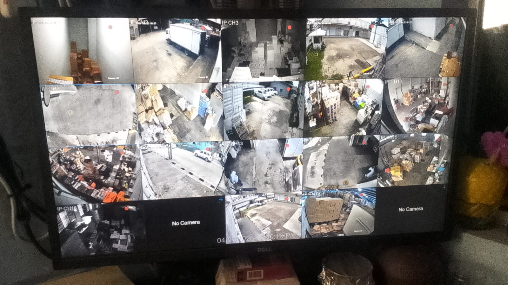

Wk 8
Camera Systems & Infrastructure
Camera Systems & Network Infrastructure

[Week 8 Photo - Camera Systems]
'">
- ✓ Troubleshot non-working security cameras
- ✓ Traced camera wiring through the building
- ✓ Diagnosed outdated camera firmware issues
- ✓ Ordered replacement cameras and equipment
- ✓ Tested warehouse camera systems and NVR channels
- ✓ Rewired conference room HDMI connections
- ✓ Updated camera firmware using rebuilt Windows 10 systems